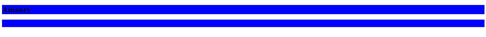
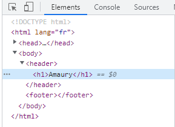
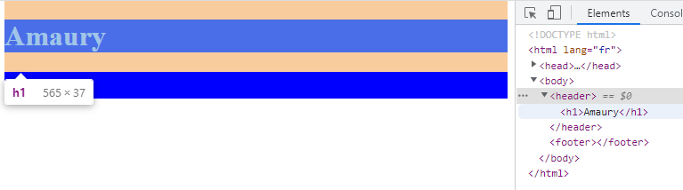
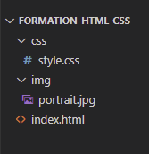
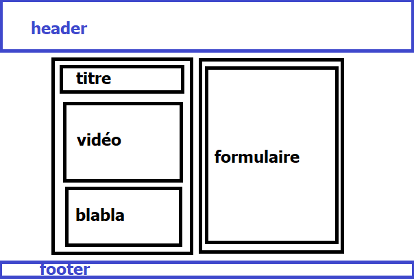
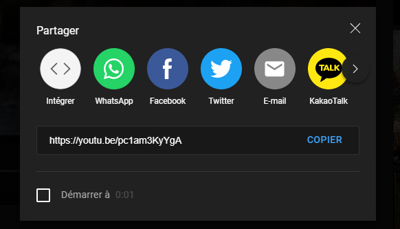
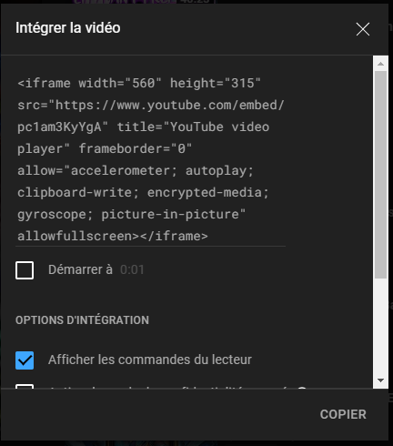

Commencez par créer un répertoire de travail, nommez le avec votre trigramme. NOTE : si vous utilisez VSCode, allez dans "fichier" puis selectionnez "Enregistrement automatique"
Occupons nous maintenant du fichier HTML. Utilisez votre éditeur de texte pour créer un nouveau fichier puis saisissez :
Hello World !Sauvegardez le fichier sous le nom index.html, ouvrez le maintenant avec un navigateur web, et magie :
Félicitation ! Vous savez désormais coder en HTML ! Mais allons tout de même un peu plus loin, effacez d'abord le contenu de votre fichier.
Comme nous l'avons vu dans la théorie, posons la base de notre page HTML. Si vous utilisez VSCode, tapez "html" puis cliquez sur "html:5", ou copiez tout simplement le code suivant :
<!DOCTYPE html>
<html lang="en">
<head>
<meta charset="UTF-8">
<meta http-equiv="X-UA-Compatible" content="IE=edge">
<meta name="viewport" content="width=device-width, initial-scale=1.0">
<title>Document</title>
</head>
<body>
</body>
</html>
Modifions le un peu:
<!DOCTYPE html>
<html lang="fr">
<head>
<meta charset="UTF-8">
<meta http-equiv="X-UA-Compatible" content="IE=edge">
<meta name="viewport" content="width=device-width, initial-scale=1.0">
<title>ABO (votre trigramme)</title>
</head>
<body>
Hello World !
</body>
</html>
Sauvegardez le et vérifiez que tout est ok.
Maintenant créons un fichier CSS
Mais pourquoi ne pas mettre le CSS directement dans le HTML ?
Parce que ma façon de faire est la meilleure.
Dans votre répértoire de travail, créez un nouveau dossier nommé "css", créez-y un fichier "style.css".
Maintenant, ajoutons-y un peu de code.
body {
color: red;
}
Pensez à sauvegardez le fichier si vous n'avez pas de sauvegarde automatique
Importons notre fichier css sur notre page HTML comme nous l'avons vu dans la théorie
<!DOCTYPE html>
<html lang="fr">
<head>
<meta charset="UTF-8">
<meta http-equiv="X-UA-Compatible" content="IE=edge">
<meta name="viewport" content="width=device-width, initial-scale=1.0">
<title>ABO</title>
<link href="css/style.css" rel="stylesheet">
</head>
<body>
Hello World !
</body>
</html>
Actualisez la page (il faut parfois vider le cache de la page pour que vos changements CSS soient pris en compte - ctrl+F5 sur windows) et admirez :
Nous avons désormais une page HTML et un fichier CSS qui travaillent ensemble ! Effacez le "Hello World !" du HTML puis videz le fichier CSS, nous allons créer une vraie page !
Commençons par ajouter les éléments <header> (en tête) et <footer> (pied de page) à l'élément <body>.
<body>
<header></header>
<footer></footer>
</body>
Maintenant ajoutons une couleur (sombre) aux arrière-plans de nos nouveaux éléments.
header, footer {
background-color: blue;
}
Actualisez et... rien ! C'est parce que nos éléments header et footer sont vides et n'ont aucune hauteur (propriété height) définie. Réparons ceci :
<body>
<header>
<h1>VOTRE PRÉNOM</h1>
</header>
<footer></footer>
</body>
header, footer {
background-color: blue;
}
footer {
height: 30px;
}
/* Voici les unités de mesures les plus fréquemment utilisées */
/* px : pixel */
/* % : pourcentage */
/* rem : correspond à la hauteur de la police d'écriture du document (par défaut 16px) */
/* em : correspond à la hauteur de la police d'écriture de l'élément */
Regardons ça de nouveau.
Le titre est difficile à lire, passons le en blanc !
header h1 {
color: white;
}
Vous vous êtes peut-être demandé d'où viennent les espaces blancs autour des éléments et entre le header et le footer. Après tout, on ne les a codé nulle part. Inspectons la page !
Allez sur le navigateur, clic droit + inspecter. Assurez vous d'être dans l'onglet Elements
D'ici, vous pouvez voir tous les éléments, voir la place qu'ils prennent sur la page et même effectuer des modifications temporaires. Essayez par exemple de modifier la couleur d'arrière plan du header
Bref, nous sommes ici pour vérifier d'où viennent les espaces blancs. Passez votre souris au dessus de chaque éléments (dans la fenêtre d'inspection), quelque chose devrait vous alerter.
Les éléments body et h1 sont entourés de orange, cela veut dire qu'ils ont une marge extérieure (paramètre margin). Pourtant nous n'avons rien codé de tel, ce sont justes des paramètres par défaut mais heureusement, nous pouvons les modifier.
header h1, body {
margin: 0;
}
Bon, ça rend moins bien sur le moment, mais ça nous sera utile par la suite !
NOTE : Dans l'outil d'inspection, un espace orange correspond à une marge extérieure (margin) et un espace vert correspond à une marge intérieure (padding).
Maintenant, mettons une image ! Pour afficher une image, on utilise la balise <img> en précisant la source de l'image (url si l'image est sur internet ou son chemin si elle est sur votre ordinateur
Crééz un dossier "img" dans votre répertoire de travail pour enregistrez-y une image de votre portrait. NOTE : à ce stade, votre arborescence devrait ressembler à ceci :
Ensuite, dans le header, créons un élément <div> pour contenir notre image (ce n'est pas nécessaire mais cela rend plus simple la manipulation de l'élément).
<header>
<h1>VOTRE PRÉNOM</h1>
<div>
<img src="img/portrait.jpg">
</div>
</header>
Vous pouvez actualiser pour contempler le résultat. Il est possible que votre image soit plus ou moins grande, standardisons ça avec la propriété width (note : par défaut, la proportion hauteur/largeur est conservée).
header img {
width: 150px;
}
Maintenant, changeons notre image en carré. On ne peut pas modifier le paramètre height, cela casserait les proportions de l'image. Par contre nous pouvons modifier l'élément <div> qui contient l'image.
header div {
/* On spécifie la largeur, par défaut, une div prendra 100% de la largeur de son parent. */
width: 150px;
height: 150px;
/* Modifier la hauteur ne suffira pas : l'image débordera de la div. */
/* Pour pallier à ça, on peut dire à la div "masque tout ce qui dépasse" avec la propriété overflow. */
overflow: hidden;
}
Ok ! Nous avons notre carré avec notre image à l'intérieur. Maintenant, changeons ce carré en cercle et donnons lui une bordure.
header div {
width: 150px;
height: 150px;
overflow: hidden;
border-radius: 150px;
border: 2px solid white;
}
Si tout s'est bien passé, vous avez quelque chose comme ceci :
Maintenant, repositionnons un peu tout ça. Il existe des dizaines de façon différentes de positionner des éléments avec CSS, que ce soit en ajoutant des marges, en forçant une position etc.
Dans le cas présent, une petite astuce permet de faire ce qu'on recherche en 3 lignes tout en étant responsive !
header {
/* Plus d'infos sur les flexbox */
display: flex;
/* Plus d'infos sur la propriété justify-content */
justify-content: space-between;
/* Plus d'infos sur la propriété align-items */
align-items: center;
/* Attention les propriétés précédentes ne fonctionnent qu'avec la propriété display: flex; */
}
C'est mieux ! Cependant nos éléments sont aux extrémités de l'écran, ce n'est pas très classe. Rapprochons les du centre.
On pourrait se dire qu'ajouter de la marge à gauche et à droite pourrait être une bonne idée. Mais si ça rend bien sur votre écran, ça ne sera peut être pas le cas sur celui d'un autre avec une résolution plus petite
L'idéal serait de replacer nos éléments dans un élément parent auquel nous attribuerons une taille maximale puis que nous centrerons à l'écran.
<header>
<section>
<h1>Amaury</h1>
<div>
<img src="img/portrait.jpg">
</div>
</section>
</header>
Modifions le css de l'élément header, remplaçons le par l'élément section
section {
display: flex;
justify-content: space-between;
align-items: center;
/* 1300px correspond à la taille standard minimale d'un écran d'ordinateur */
max-width: 1300px;
/* la valeur auto sur la propriété margin centre l'élément horizontalement par rapport à son élément parent. */
margin: auto;
/* On ajoute un padding pour décoller l'image de la bordure. */
padding: 10px;
}Actualisez et modifier la taille de la fenêtre pour vérifier que tout s'adapte bien.
Nous terminerons le header en ajustant la taille de votre prénom.
header h1 {
color: white;
font-size: 50px;
}
Positionnons maintenant le footer à sa place, c'est à dire en pied de page. Nous allons opter pour une solution bien moins fine que la flexbox !
/* Plus d'infos sur la propriété position */
footer {
/* On spécifie une width, autrement elle sera égale à 0 une fois passé en positionnement absolu. */
width: 100%;
height: 30px;
position: absolute;
bottom: 0;
}Ajoutons du contenu à notre footer. Un lien vers linkedin par exemple.
<footer>
<a href="*lienversvotrelinkedin*">Mon linkedin</a>
footer {
width: 100%;
height: 30px;
position: absolute;
bottom: 0;
display: flex;
justify-content: center;
align-items: center;
}
footer a {
color: white;
}Nous en avons terminé avec header/footer, maintenant ajoutons du contenu sur notre page !
Voici l'objectif :
Première étape : créer deux éléments qui prendront chacun une part égale d'un élément parent. Comme toujours il existe plusieurs façon de faire mais nous allons utiliser ici un outil CSS parfait pour notre cas : les grilles ou grid.
Plus d'infos sur la propriété grid.
On commencera par le CSS.
.container {
display: grid;
grid-template-columns: repeat(2, 1fr);
column-gap: 20px;
row-gap: 20px;
}
.grid-span-1 {
grid-column: span 1;
min-height: 500px;
/* On donne temporairement couleur d'arrière plan à cette classe afin de la repérer plus simplement. */
background-color: antiquewhite;
}<header>
<section>
<h1>Amaury</h1>
<div>
<img src="img/portrait.jpg">
</div>
</section>
</header>
<section class="container">
<div class="grid-span-1"></div>
<div class="grid-span-1"></div>
</section>
<footer></footer>
Le moment est bien choisi pour parler du responsive. Essayer de réduire la largeur de votre navigateur. Nos deux nouveaux éléments se retrouvent compressés et restent côte à côte. Tant qu'ils sont vides, cela ne posent pas de problème, mais nous avons l'intention de les remplir ! De la même façon, notre header est un peu "massif" pour de plus petites résolutions. Voyons ce que nous pouvons y faire.
/* Ici, on dit au CSS "modifie/applique des propriétés pour les éléments suivants */
/* si la taille de l'écran est égale ou inférieur à 768px". */
@media screen and (max-width: 768px) {
.container {
grid-template-columns: repeat(1, 1fr);
row-gap: 20px;
}
header img {
width: 75px;
}
header div {
height: 75px;
width: 75px;
border-radius: 75px;
}
header h1 {
font-size: 30px;
}
footer {
position: relative;
}
}
/* Voici la liste des points de rupture (breakpoints) afin d'adapter au mieux son responsive : */
/* 320px-480px : smartphone */
/* 481px-768px : tablette */
/* 769px-1024px : petit écran pc portable */
/* 1025px-1280px : écran pc portable */
/* au dessus de 1281px : écran pc bureau */
/* Si nous avions voulu créer une plage responsive uniquement pour les tablettes, nous aurions fait : */
/* @media screen and (min-width: 481px) and (max-width: 768px) {} */Modifiez la taille de votre navigateur pour vérifier que tout fonctionne. Une fois que tout est ok, supprimez la propriété background-color de la classe grid-span-1.
Remplissons la colonne de gauche, préparons le terrain avant d'aller chercher la vidéo.
<section class="container">
<div class="grid-span-1 video-div">
<div class="title">Le titre de votre vidéo</div>
<div class="video"></div>
<div class="comment">Votre commentaire sur la vidéo</div>
</div>
<div class="grid-span-1 form-div"></div>
</section>
Allez ensuite sur Youtube, trouvez la vidéo que vous voulez partager et cliquer sur... partager !
Puis sur "intégrer".
Copiez le code et collez le dans notre div .video.
Supprimez les attributs height et width de votre élément iframe.
Occupons nous de l'esthétique. Vous devriez ne pas être perdu.
.video-div {
text-align: center;
}
.title {
color: blue;
font-weight: bold;
font-size: 30px;
}
.video {
padding: 20px;
}
.video iframe {
width: 100%;
height: 300px;
}
.comment {
font-size: 20px;
}Créons maintenant un super formulaire dans la partie de droite ! Attention c'est un gros bloc
<div class="grid-span-1 form-div">
<div class="title">Formulaire</div>
<!-- On place chaque parties du formulaire dans un élément div afin que ceux-ci apparaissent les uns sous les autres
autrement, ils apparaitraient les uns à côté des autres. -->
<form action="">
<div>
<!-- <br> sert à revenir à la ligne, autrement le label serait à côté de l'input.
L'attribut for de l'élément label fait référence à l'id de l'input concernée. A quoi ça sert ?
Si l'utilisateur clique sur le label, l'input sera selectionné. -->
<label for="name-input"><b>Votre nom</b></label><br>
<!-- L'attribut name simplifie la récupération des données contenu dans le formulaire. -->
<input type="text" name="form-name" id="name-input">
</div>
<div>
<b>Avez vous aimé la vidéo ?</b><br>
<label for="radio-yes">Oui
<!-- Sur les input:radio, l'attribut name permet de déterminer à quel ensemble appartient l'input -->
<input type="radio" name="form-radio" id="radio-yes" value="yes">
</label>
<label for="radio-no">Non
<input type="radio" name="form-radio" id="radio-no" value="no">
</label>
</div>
<div>
<label for="user-comment"><b>Dites nous en plus :</b></label><br>
<!-- Pour les longues réponses, on préfére utiliser un élément textarea à un élément input:text
car textarea permet à l'utilisateur de revenir à la ligne. -->
<textarea name="form-textarea" id="user-comment" rows="10"></textarea>
</div>
<input type="submit">
</form>
</div>Appliquons le CSS:
.video-div, .form-div {
text-align: center;
}
/* Notez la façon de faire référence à un élément input ayant l'attribut type configuré sur text. */
/* Cela fonctionne avec tous les attributs */
input[type=text], textarea {
width: 70%;
}
form div {
padding: 20px;
}
form b {
font-size: 20px;
}Pas mal hein ? Remplissez votre formulaire et cliquez sur "Envoyer" !
Comme vous avez pu le constater, rien ne se produit... presque ! Regardez l'url en haut de votre navigateur, elle contient des données !
Si on peut se permettre d'aborder cette partie, c'est que vous avez été performant et que vous voulez souffrir aller au bout des choses.
En vrai c'est facile (pour moi de le dire).
Dans votre répertoire de travail, crééz un dossier "js" puis placez un fichier nommé "script.js" à l'intérieur
Ensuite importons notre script dans index.html.
</body>
<!-- Le script se place TOUJOURS après le contenu de la page. -->
<script src="js/script.js"></script>
</html>Notez qu'on aurait pu directement ajouter le code entre les balises "script"
Voici le code à saisir dans script.js. Je vais essayer de commenter au maximum !
// Dans JS, une variable doit être déclarée à sa première apparition
// ainsi le programme comprends qu'une nouvelle variable a été instanciée
// et qu'elle pourra réapparaître plus tard dans le programme.
// Auparavant, cela était fait en tapant "var" avant le nom de sa variable.
// Cela fonctionne toujours mais on préfère désormais utiliser const et let.
// const = on déclare une constante (dont la valeur ne changera jamais).
// let = on déclare une variable (dont la valeur peut changer).
// On commence par instancier la constante form qui correspond à notre formulaire html.
const form = document.querySelector("form");
// Ensuite on "écoute" l'événement "submit" sur notre formulaire.
// En bref : si l'utilisateur clique sur "Envoyer", on effectue les actions suivantes.
form.addEventListener("submit", (event) => {
// preventDefault() permet d'éviter à la page de se recharger lorsque l'on submit le formulaire.
event.preventDefault();
// On instancie la variable answer qui sera égale à ce que retournera la fonction gatherFormData().
let answer = gatherFormData();
// On envoie la réponse (de façon peu élégante) à l'utilisateur.
alert(answer);
})
// Ici on déclare une nouvelle fonction avec "function".
function gatherFormData() {
// On converti la constante "form" en un objet FormData.
// Cela nous permet de récupérer les données très simplement.
let formData = new FormData(form);
// On récupére le nom de l'utilisateur.
let name = formData.get("form-name");
// On récupère ce que retournera la fonction likeOrDislike avec un paramètre
// qui correspond à la valeur retournée par les input:radio
let like = likeOrDislike(formData.get("form-radio"));
let comment = formData.get("form-textarea");
// On retourne une phrase que l'on construit à l'aide des valeurs qu'on a récupéré.
return (
name
+ " "
+ like
+ " votre vidéo, et voici son commentaire : \""
+ comment
+ "\"."
)
}
function likeOrDislike(radioValue) {
// Si la valeur des input:radio est égale à "yes", on retourne "a aimé".
// Autrement, on retourne "n'a pas aimé".
return (radioValue == "yes") ? "a aimé" : "n'a pas aimé";
}Remplissez le formulaire, validez le et la magie s'opérera !